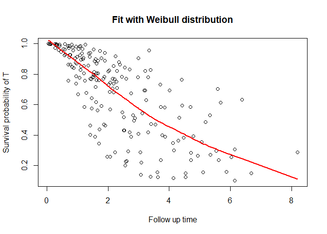

The package DepCens uses dependent censoring regression models for survival multivariate data. These models are based on extensions of the frailty models, capable to accommodating the dependence between failure and censoring times, with Weibull and piecewise exponential marginal distributions.
Installation
The latest stable version can be installed from CRAN:
install.packages('DepCens')The latest development version can be installed from GitHub with:
install.packages("devtools")
devtools::install_github('GabrielGrandemagne/DepCens')Example
This is a basic example which shows you how to solve a common problem:
library(DepCens)
#KidneyMimic is our simulated data frame
delta_t <- ifelse(KidneyMimic$cens==1,1,0)
delta_c <- ifelse(KidneyMimic$cens==2,1,0)
fit <- dependent.censoring(formula = time ~ x1 + x2 | x3 + x1, data=KidneyMimic, delta_t=delta_t,
delta_c=delta_c, ident=KidneyMimic$ident, dist = "weibull")
summary_dc(fit)
#>
#> Weibull approach
#>
#> Name Estimate Std. Error CI INF CI SUP p-value
#> Alpha 1.386908 0.3175058 0.7645967 2.009219 1.253e-05
#> Sigma 0.6473139 0.219075 0.2179268 1.076701
#>
#> Coefficients T:
#>
#> Name Estimate Std. Error CI INF CI SUP p-value
#> x1 0.08110233 0.02140495 0.03914863 0.123056 0.0001513
#> x2 -1.399794 0.2460258 -1.882005 -0.9175837 1.273e-08
#>
#> Coefficients C:
#>
#> Name Estimate Std. Error CI INF CI SUP p-value
#> x3 0.2307375 0.1853012 -0.1324529 0.5939279 0.2131
#> x1 0.1953483 0.03854422 0.1198016 0.2708949 4.017e-07
#>
#> ----------------------------------------------------------------------------------
#>
#> Information criteria:
#>
#> AIC BIC HQ
#> 404.3393 434.0241 416.3523KidneyMimic is our simulated data frame. For more information check the documentation for stored datasets.
head(KidneyMimic)
#> ident time event x1 x2 x3 cens delta_t delta_c
#> 1 1 1.7828475 0 4.6770531 1 2.43961938 2 0 1
#> 2 2 6.3723589 0 0.1628727 1 -1.24630803 3 0 0
#> 3 3 6.6803247 1 -2.1962148 1 -0.73713564 1 1 0
#> 4 4 0.6975475 0 2.7430873 0 -0.31424253 2 0 1
#> 5 5 5.1130483 0 -1.1663762 1 0.03064846 2 0 1
#> 6 6 2.8189839 0 3.7558997 1 -0.52617419 2 0 1You can also plot the survival function
plot_dc(fit, scenario = "t")